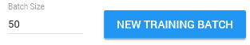

Project Actions
Once a project has been added, click
for all Project Actions.
Click
to unfold all available projects and select one.
Add Project
Click
+ Add Project
to open the Create Project Wizard.
In a project, (subsets of) documents from a matter are reviewed/analyzed.
Add Issue
Click
+ Add Issue
to add a new issue to your project.
Recalculate Vectors
Text documents are converted to a document vector representation suitable for the classifier.
New documents might be added to the matter on which your project was based. To ensure these documents can be used by the Assisted Review process, document vector representation needs to be recalculated.
Project Report
Click Project Report to download a PDF report containing data about the project and general statistics about the classification process at the moment of the report request.
Training Rounds Report
Click Training Rounds Report to download a csv report containing data about the reviewed documents at the moment of the report request. The documents are listed by id number, document name, hash value, file type, issue name, responsiveness (Responsive/Not Responsive), training round number and reason (added, removed, changed).
Delete Project
Click Delete Project to remove it.
All information from the project will be deleted, including issues/tags.
Assisted Review Progress
View the progress of the vector calculation process per issue.
Issue Configuration
View if the issue is based on a Random Set, a Query, Existing Tagging or created from Topic Modeling.
View the minimum batch size of the issue.
Delete Issue
Click the  button.
Please note that if an issue is deleted, tags assigned to documents in the issue are deleted. Also, information about the documents related to the deleted issue will not be shown in the training rounds report anymore.Add New Training Batch
button.
Please note that if an issue is deleted, tags assigned to documents in the issue are deleted. Also, information about the documents related to the deleted issue will not be shown in the training rounds report anymore.Add New Training Batch
After reviewing your progress, you can add a new training batch:

View Statistics and Graphs
To view the Statistics and Graphs, select (in the bottom left corner of an issue)
Classify Remaining
Select Classify Remaining if finding more responsive documents is not worth the time/cost of (manually) reviewing more documents, and/or the classifier is returning good results (the quality of the classifier is determined based on the results of the statistics and graphs).
Set the Classifier Threshold Score (with a value larger than 0.0 and smaller than 1.0, default threshold is set at 0.5). Only documents with a ranking value higher than (not equal to) the Classifier Threshold Score will be classified and put in the Classification Results (Assisted Review Results field).

Training Batch Status
Completed
Total reviewed documents (Responsive or Not Responsive Assisted Review tag applied) of
the Training Batches for this issue.
ToDo
Total
not yet
reviewed documents of the Training Batch for this issue.
If you request a new training batch, ToDo will only be reset and a new training batch will only be calculated when the following conditions for the issue are met:
-
All documents of the initial training set size are reviewed. If not, the request for a new training batch will be ignored. The reviewer has to finish review of the initial training set.
-
The reviewed documents contain at least a Responsive and a Not Responsive document. If not, the Training Batch will be extended, but you will remain in the same training round.
Training Results
Responsive Documents Found
Documents with Responsive Assisted Review tag applied, excluding Validation Set.
Classified as Responsive
Documents that are classified as responsive by the last trained classifier. Documents that are classified as responsive, are not automatically tagged with Assisted Review tags.
Classifier Threshold Score
The Classifier Threshold Score that was used when selecting Classify Remaining.
Training Statistics
Precision is a measure of result relevancy, while recall is a measure of how many truly relevant results are returned. High scores for both precision and recall show that the classifier is returning accurate results (high precision), as well as returning a majority of all positive results (high recall).
Precision for Recall Goal
Precision value for the user-defined recall goal in precision recall curve on Training Batch.
Recall Goal
User-defined goal.
Estimated Current Recall
The estimated current recall is the total number of reviewed responsive documents in the project (including the reviewed responsive documents of the Validation Set) divided by the estimated number of all responsive documents in the project.
Validation Set Status
Completed
Total reviewed documents (Responsive or Not Responsive Assisted Review tag applied) of the Validation Set for this issue.
ToDo
Total
not yet
reviewed documents of the
Validation Set for this issue
Extend Set
You can extend the Validation Set. Please review the Validation Set completely before extending it. Extend Set will extend Validation Sets for all project issues.
Click Extend Set and click OK. The size of the Validation Set will be extended with 10% of the current Validation Set (with a minimum of 50 documents). Click Extend Set again to add another 10%.
Validation Set Results
Responsive
Documents of the Validation Set with Responsive Assisted Review tag applied.
Not Responsive
Documents of the Validation Set with Not Responsive Assisted Review tag applied.
Precision for Recall Goal
Precision value for the user-defined recall goal in precision recall curve on Validation Set.